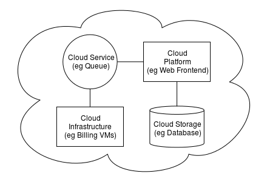

CLOUD COMPUTING

ARSITEKTUR
LIHATCLOUD COMPUTING ARCHITECTURE
Arsitektur komputasi awan mengacu pada komponen dan subkomponen yang diperlukan untuk komputasi awan . Komponen ini biasanya terdiri dari platform ujung depan (klien gemuk, klien tipis, seluler), platform ujung belakang (server, penyimpanan), pengiriman berbasis cloud, dan jaringan (Internet, Intranet, Intercloud). Gabungan, komponen ini membentuk arsitektur komputasi awan. ~ https://en.wikipedia.org/wiki/Cloud_computing_architecture